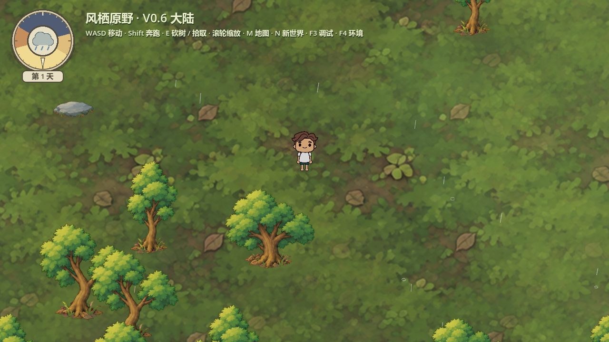
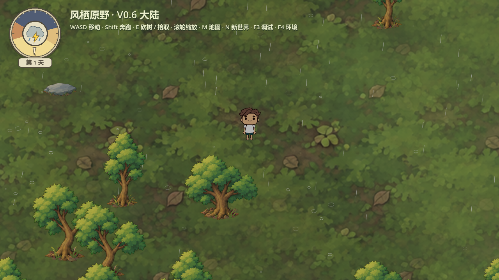
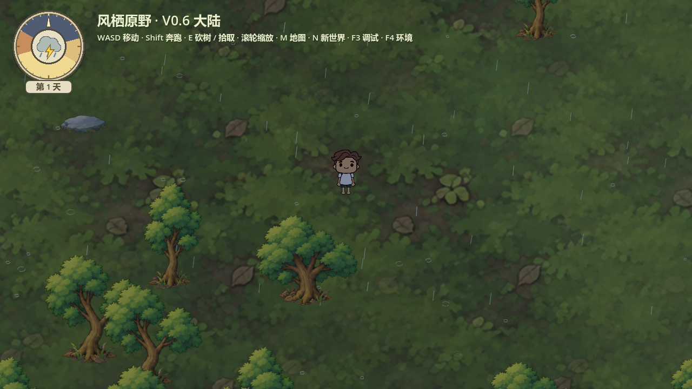
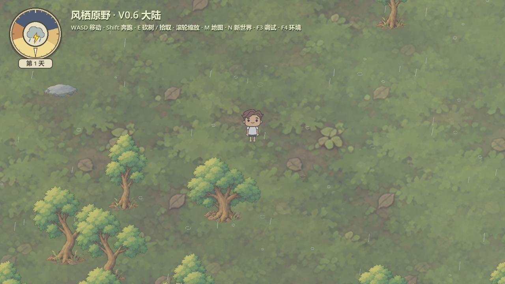
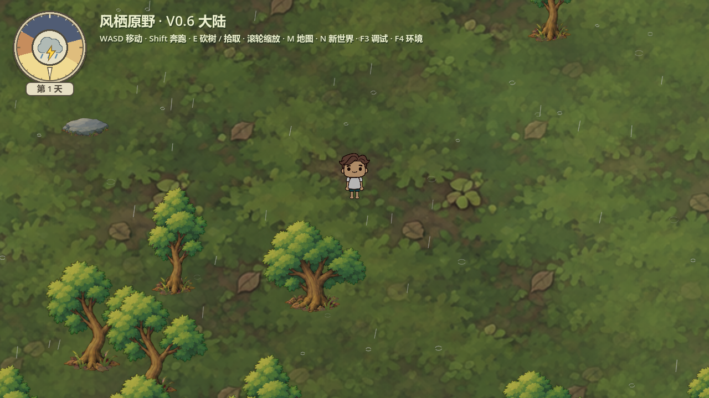
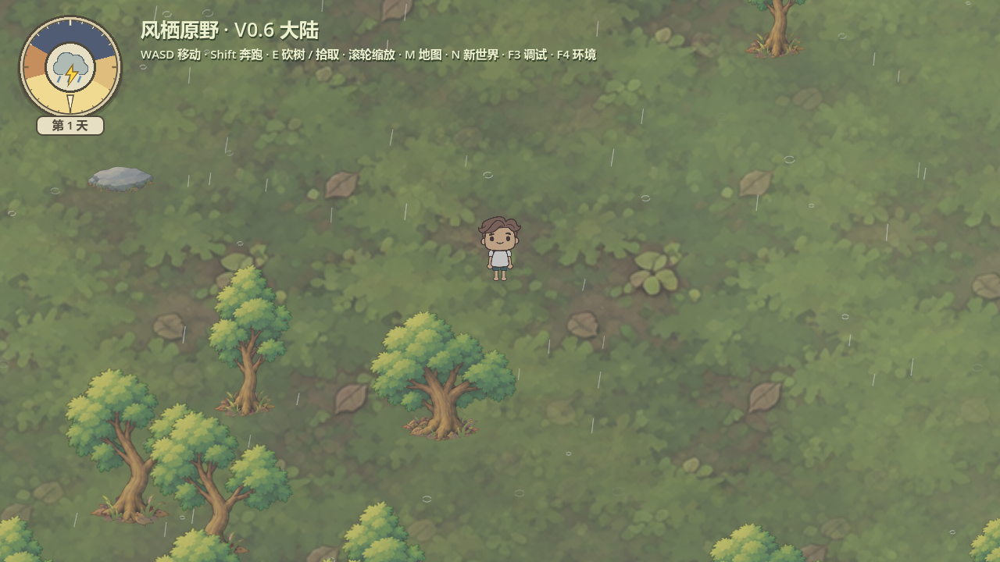
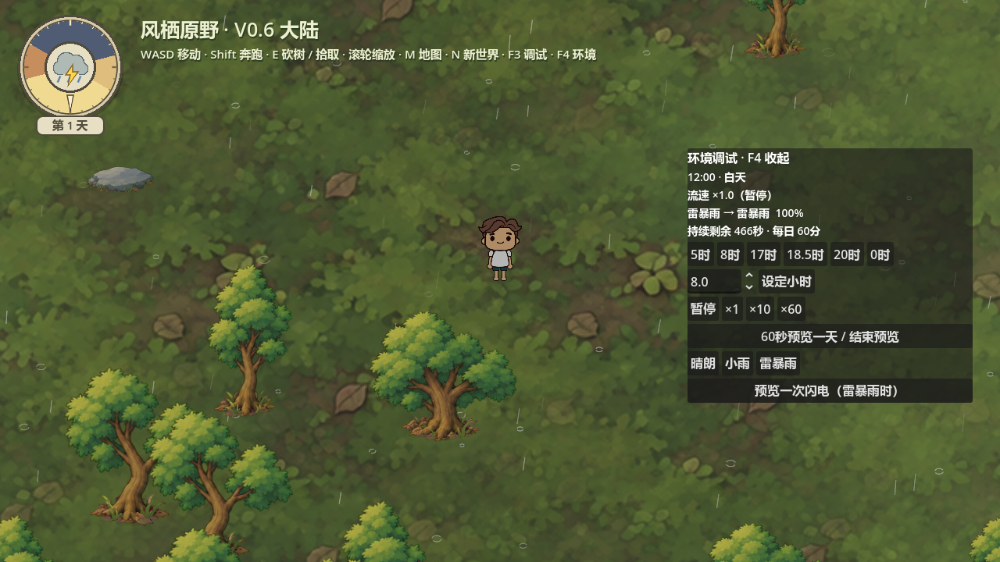

双击项目根目录 Start-Playtest.cmd，F4选择晴朗/小雨/雷暴雨，25秒渐变；雷暴雨时可点“预览一次闪电”检查两下短闪。雨声与雷声继续暂缺。
小雨保持此前稀疏参数；落地断弧提亮，与雨丝共用白色。雷暴雨目标雨量约5倍、光照更暗、圆盘增加闪电。正常闪电每45–90现实秒一组，两次短闪总长不超过0.28秒；UI不闪。
专项47项、0失败，Godot4.7.2 / Compatibility / RTX5060。短样本180帧小雨和120帧雷暴，均限60FPS；雷暴最多81条活跃雨丝，帧间隔中位16.665ms、P95 16.723ms。仅此已加载森林场景，不代表全地图压力性能。



第1下峰值

中间暗间隔

第2下峰值

